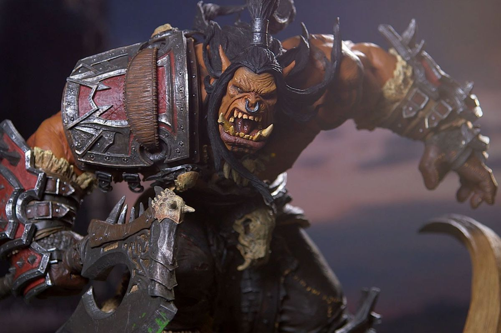
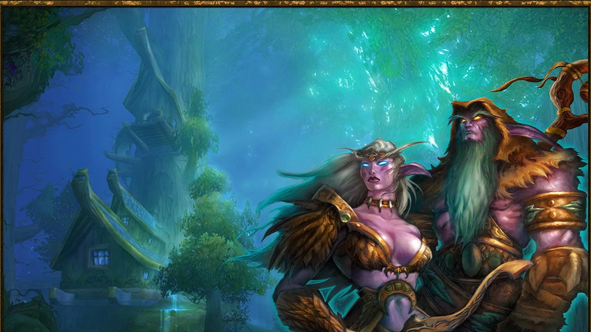

Human

The Humans are one of the primary races in Warcraft 3. They are known for their adaptability, strong economy, and versatile units. The Human campaign revolves around the struggle to protect their kingdom from various threats.
Orc
The Orcs are a powerful and aggressive race. They have formidable warriors and powerful shamans who can call upon the elements. The Orc campaign follows the story of Thrall as he leads his people to a new homeland.
Undead

The Undead, also known as the Scourge, are a terrifying race of undead creatures led by the Lich King. They excel in necromancy and dark magic, with units like the fearsome Death Knight and the Banshee.
Night Elf
The Night Elves are an ancient and mystical race. They have powerful archers, mighty druids, and fearsome protectors of the forests. The Night Elf campaign explores their struggle to protect the sacred World Tree.